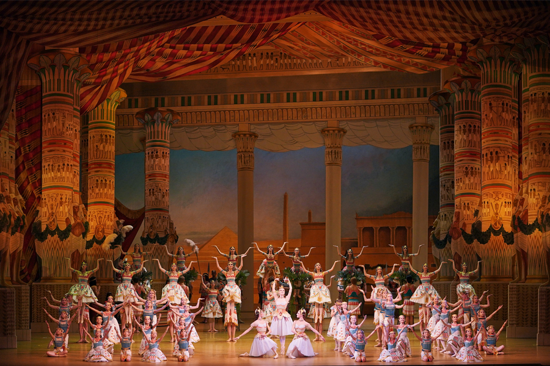

«Дочь фараона» в Мариинском: очередные показы грандиозного балета с
дебютными составами
10.04.2023

29 и 30 апреля, а также 1 мая в Мариинском-2 состоится серия новых
показов балета «Дочь фараона» – самой громкой премьеры сезона
2022–2023 годов. В пяти спектаклях зрители увидят яркие дебютные
составы и артистов, которые блистали на премьере.
30 апреля в 19:00 в партии любимой дочери фараона Аспиччии дебютирует
Олеся Новикова, а в партии храброго египтянина Таора – Тимур Аскеров.
Роль Рамзеи исполнит Надежда Батоева. 1 мая в 12:00 все главные партии
будут дебютными: на сцену выйдут Оксана Скорик (Аспиччия), Александра
Хитеева (Рамзея) и Эван Капитен (Таор).
Еще два показа обещают дебютные комбинации солистов. Так, 30 апреля в
12:00 на сцене встретятся Аспиччия Марии Хоревой и Рамзея Марии
Ширинкиной – артистки еще не выступали вместе, партию Таора исполнит
Филипп Стёпин. А 1 мая в 19:00 впервые выйдут в дуэте Мария Ильюшкина
(Аспиччия) и Елена Евсеева (Рамзея), партию Таора исполнит Владимир
Шкляров. Вновь увидеть Викторию Терёшкину, Ренату Шакирову и Кимина
Кима, торжественно открывших самый первый показ «Дочери фараона»,
можно будет 29 апреля.
С блеском вернувшись в репертуар после вековой паузы, грандиозный
балет «Дочь фараона» уже успел покорить сердца зрителей на четырех
премьерных показах, прошедших в конце марта. Масштабная реконструкция
поражает изящностью хореографии с множеством мелких движений,
декорациями с поистине императорским размахом и появлением самых
неожиданных персонажей на сцене – всем тем, чем отличался балет
середины XIX столетия.